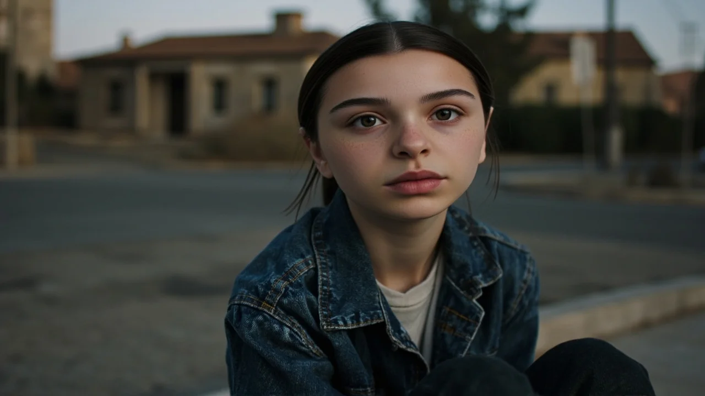
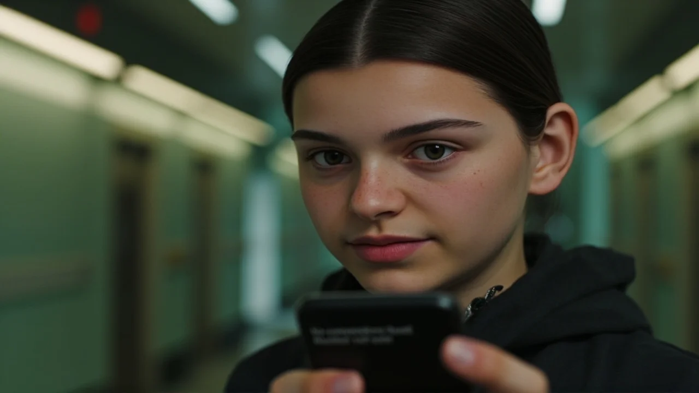
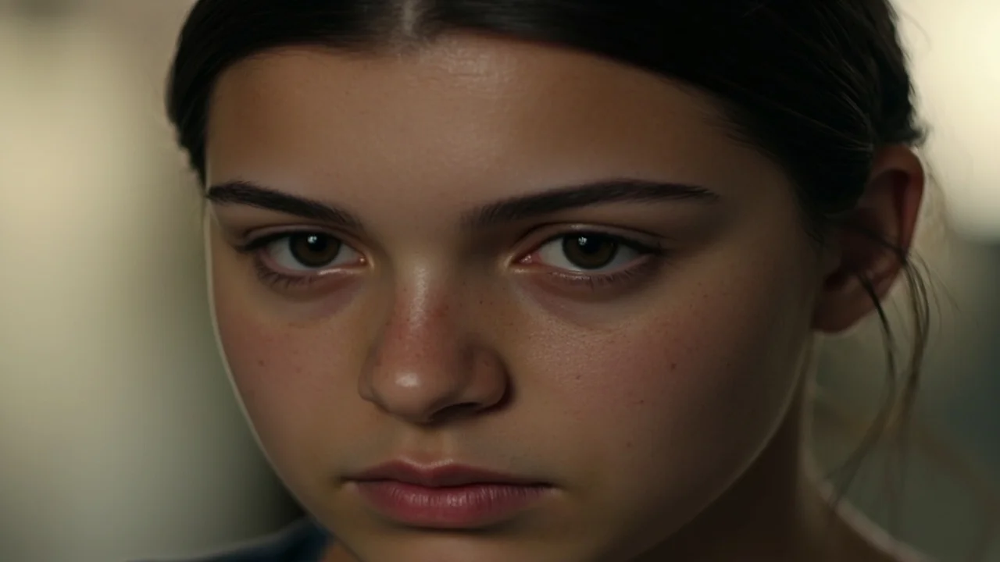
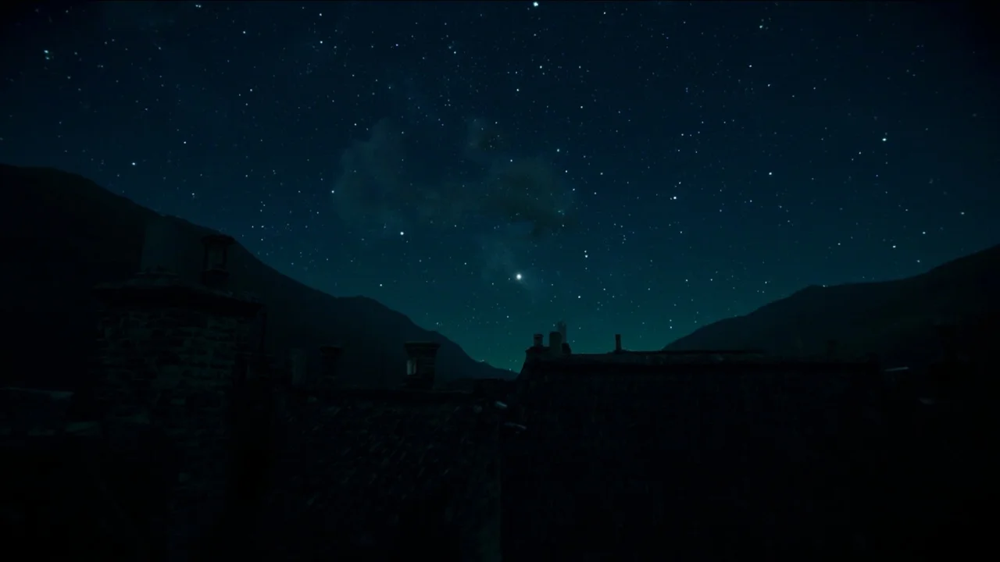
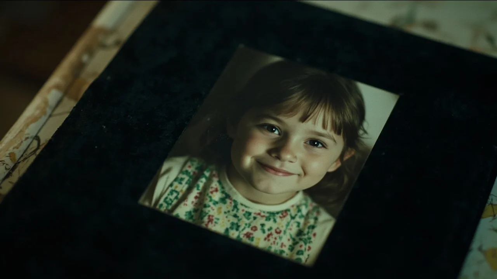

El timbre de la bicicleta de Marcos sonaba siempre dos veces en el cruce de las cuatro esquinas: un tintineo corto y limpio que avisaba a Lucía para volver juntos a casa. Aquella tarde de noviembre, las campanas de la iglesia dieron las seis y cuarto sin que el camino devolviese un solo rumor de ruedas. Lucía esperó diez minutos sentada sobre el bordillo de granito, con las manos metidas en los bolsillos de la cazadora vaquera. El aire del atardecer mordía con fuerza y el cielo sobre los tejados de adobe se apagaba en un tono ceniza. Extrañada por el retraso de su amigo, cargó la mochila al hombro y subió la cuesta hacia la calle del Olmo.
La cancela de los Soler estaba entornada. Lucía cruzó el patio y llamó a la puerta de madera maciza. Al abrirse la hoja, apareció Elena con un trapo de cocina entre los dedos y el semblante sereno.
—Buenas tardes, Elena. Venía a ver si Marcos estaba ya arriba. Llevo un rato esperándolo en el cruce.
La mujer la miró con una cortesía distante y educada, sin la calidez habitual con la que solía recibirla cada tarde.
—¿A quién buscas, muchacha? —preguntó, ladeando la cabeza.
—A Marcos. Su hijo.
Elena sonrió con extrañeza y negó despacio con la cabeza.
—Te estás equivocando de casa, hija. Mi marido y yo vivimos solos desde que nos casamos. Nunca hemos tenido muchachos.
A Lucía se le cortó la respiración de golpe. En el recibidor, el perchero de madera seguía en su sitio, pero la trenca verde de Marcos no estaba en su percha habitual. En el patio, donde por la mañana descansaba su bicicleta con el guardabarros torcido, solo había tres tiestos rotos cubiertos de musgo seco.
—Elena, estuvimos merendando en esta cocina ayer mismo —insistió Lucía, dando un paso adelante con el pecho encogido—. Se le cayó la leche en la mesa y usted se rio mientras lo limpiaba.
—No sé qué broma es esta —dijo la mujer, cerrando la puerta con gesto cansado—. Vuelve a tu casa antes de que caiga la niebla y tus padres se preocupen.

El cerrojo encajó por dentro con un chasquido metálico rotundo.
A la mañana siguiente, Lucía llegó temprano al instituto con la cabeza embotada tras una noche en vela repasando recuerdos. En el aula, el pupitre contiguo al suyo, donde Marcos acostumbraba a apoyar los codos y dibujar diagramas mecánicos en los márgenes, estaba ocupado por una pila de libros viejos desparejados. Cuando don Teodoro pasó la lista matinal, saltó de su apellido al siguiente sin detenerse.
—¿Y Marcos Soler? —preguntó Lucía, poniéndose en pie de inmediato.
El profesor levantó la vista de sus fichas de cartulina.
—¿Quién dices, Lucía?
—Marcos. Se sienta a mi izquierda desde septiembre.
Don Teodoro repasó las hojas con el dedo índice y negó con paciencia.
—En este curso no hay nadie con ese apellido. Siéntate, por favor, y abre el libro por la página cuarenta.
Lucía miró a sus compañeros de clase, pero nadie pestañeó con complicidad; la observaban como a una extraña que desvaría. En el recreo corrió hacia el tablón del vestíbulo. En la foto del equipo de balonmano, entre el hombro de Mateo y el marco de madera, solo quedaba un espacio de pared enlucida. El hueco permanecía exacto, pero Marcos había desaparecido de la imagen como si jamás hubiese posado ante la cámara.
En su teléfono móvil tampoco quedaba rastro: las conversaciones se habían borrado y el número figuraba como inexistente. Desesperada, metió la mano en el bolsillo interior de la cazadora. Sus dedos tocaron algo sólido y frío: una tuerca de bronce hexagonal, limada a mano por las cuatro caras, con las iniciales «L» y «M» grabadas a punta de navaja. Marcos se la había regalado en agosto tras pulirla en el taller del herrero del pueblo. El objeto pesaba en su palma con la certeza rotunda de la materia viva y real.

La niebla bajó del cerro al anochecer y cubrió las calles con una humedad pegajosa que apagaba cualquier ruido lejano. Desde la penumbra de su habitación, Lucía vigilaba la farola del cruce, cuyo cono amarillo zumbaba en el silencio desierto del pueblo.
A las once y media escuchó unas pisadas lentas sobre los adoquines húmedos. Una figura alta con un gabán largo de paño negro y sombrero de fieltro calado sobre las cejas se detuvo frente a la cancela de los Soler.
Lucía contuvo el aliento pegando la frente al cristal helado. El hombre levantó despacio la cabeza y la luz le dio de lleno en la cara. Lo que vio le heló la sangre en las venas: su piel no parecía firme, sino que ondeaba como el agua sucia al recibir un golpe. Por un segundo fugaz, las facciones cetrinas de cuarenta años se suavizaron, la mandíbula se ensanchó y apareció la sonrisa torcida de Marcos, con su peca sobre el labio y la mirada que Lucía conocía de memoria. Fue apenas un latido; de inmediato, el rostro volvió a tensarse en una máscara madura, angulosa y huesuda.
El desconocido giró el cuello hacia la ventana de Lucía. La miró directamente con unos ojos grises desprovistos de brillo reflejado y curvó los labios en la misma mueca burlona que Marcos ponía al ganar una partida de cartas. Aquella sombra no había matado a su amigo: se lo había puesto encima como una prenda ajena para caminar entre los vivos.
En cuanto la figura dobló la esquina, Lucía bajó a la calle a oscuras con una linterna en la mano. Siguió la silueta del gabán a distancia prudencial, pegándose a las tapias de piedra. El hombre caminaba sin volverse hasta que tomó el sendero de la vieja fábrica harinera, un caserón abandonado junto al cauce seco del río.
Lucía cruzó la puerta desvencijada del molino procurando esquivar los cascotes. El interior olía a cereal rancio, óxido y humedad profunda. En la nave central, sentado sobre un cajón de madera entre tolvas polvorientas, el hombre la esperaba con las manos enfundadas en guantes de cuero.
—Tienes una obstinación poco común, Lucía —dijo con una voz extraña que superponía timbres diversos: la aspereza de un viejo, la cadencia de una mujer y el tono quebrado de un adolescente—. Casi nadie nota la ausencia cuando retiro una pieza. El mundo se acomoda al hueco de inmediato.
—¿Dónde está Marcos? —exigió ella, enfocando la linterna a su pecho.
El hombre sonrió con una calma glacial.

—Marcos sostiene mi pulso esta temporada. Este cuerpo necesita leña fresca para no volverse ceniza. Llevo cuatro siglos tomando una vida aquí y otra allá. Cuando arranco una existencia de cuajo, la realidad cose el roto para no desgarrarse. Nadie echa de menos lo que cree que jamás ha existido. Los padres duermen en paz creyendo que nunca concibieron y los amigos siguen su camino sin mirar atrás.
—Sus padres están vacíos por dentro y tú lo sabes —replicó Lucía con rabia—. Y yo me acuerdo de él.
El ser se levantó con una soltura que desmentía sus años aparentes y avanzó dos pasos hacia ella.
—Te acuerdas porque eres terca, pero ese recuerdo se gastará en pocos días. Primero olvidarás el tono exacto de su voz; luego, sus gestos cotidianos; al final pensarás que te lo inventaste para no estar sola. Y si insistes en no soltarlo, tendré que tomar tu rostro también.
Alargó una mano enguantada hacia su frente. Al aproximarse, la piel de sus dedos tembló, adoptando la forma huesuda y juvenil de la mano de Marcos. Lucía, en lugar de retroceder, sacó la tuerca de bronce y la alzó con fuerza entre los dos.
—¡Míralo bien! —gritó con la garganta apretada—. Tú puedes borrar la memoria de los demás, pero lo que hicimos juntos existe en el mundo real. ¡Él me dio esto con sus propias manos!
El ser vaciló y retiró el brazo con un espasmo brusco, como si el metal caliente le quemara la mirada. Durante un instante agónico, la cara de Marcos emergió bajo el sombrero en un grito mudo de socorro.
—Una baratija no detiene el hambre —siseó el monstruo, jadeando al recuperar su aspecto cetrino—. Si nadie más sostiene ese peso contigo, tu recuerdo morirá antes del amanecer.
Lucía giró sobre sus talones y corrió hacia la salida sin mirar atrás.
Llegó a casa de su abuela Carmen con el pecho ardiendo por el esfuerzo. Aporreó la puerta de madera hasta que la anciana encendió la luz del zaguán y la hizo pasar, alarmada al ver a su nieta pálida y con la ropa salpicada de barro.

Lucía la llevó de la mano hasta la mesa camilla y sacó de su mochila una fotografía doblada por las esquinas: Marcos junto al cobertizo de leña de la abuela, con un jersey manchado de serrín y una azada en la mano. La imagen se veía lechosa, perdiendo el color como si se disolviera poco a poco sobre el papel.
—Abuela, mírale con atención —suplicó Lucía, colocando la tuerca de bronce sobre la palma abierta de la anciana—. El muchacho que vino en julio cuando el vendaval levantó las tejas. Te ayudó toda la tarde a apilar los leños secos y le diste pan con dulce de membrillo y un vaso de agua fresca.
Carmen miró la cartulina con los ojos entrecerrados y un desconcierto vacío en el rostro.
—Hija, ese cobertizo lo arreglé yo sola con la ayuda del herrero...
—¡No estuviste sola! Tenía diecisiete años y una cicatriz pequeña bajo la barbilla porque se cayó de la tapia del cura cuando éramos niños. Te llamó tía Carmen para sacarte una sonrisa cuando te enfadaste por las astillas. ¡Haz memoria, por favor! Si no lo recuerdas tú conmigo, esa cosa lo borrará del mundo para siempre.
La anciana guardó silencio. En la salita solo resonaba el péndulo del reloj de pared. Carmen bajó despacio la mirada hacia la mancha seca de membrillo en el borde de la fotografía y rozó el metal de la tuerca. Poco a poco, una chispa limpia de lucidez rasgó la bruma de sus pupilas.
—Marcos... —susurró Carmen, cerrando los dedos sarmentosos con fuerza sobre la mano de su nieta—. El nieto de don Antonio el maestro. Tenía las manos llenas de arañazos de las zarzas. Claro que estuvo aquí... Se comió media barra de pan el condenado.
En el mismo instante en que la anciana pronunció su nombre, un chasquido seco retumbó en la noche, semejante al quiebro de una viga maestra en un edificio viejo.
A lo lejos, en la dirección de la harinera abandonada, un alarido desgarrador cruzó el pueblo: no era una voz humana, sino el bramido de muchas gargantas apagándose a la vez. Sobre la mesa camilla, la fotografía recuperó de golpe sus tonos vivos; las pecas sobre la nariz y la sonrisa franca de Marcos brillaron de nuevo sobre el papel con una nitidez perfecta.
Por la ventana, Lucía vio elevarse sobre el tejado del molino una columna de humo negro que el viento de poniente desbarató en copos de ceniza fría.

Al amanecer, la campana de la iglesia sonó con su toque alegre habitual. Lucía bajó apresurada por la cuesta de la calle del Olmo. En el patio de los Soler, la cancela de hierro estaba abierta de par en par y la bicicleta azul descansaba apoyada contra el muro, con la cadena recién engrasada goteando sobre la grava.
Elena abrazaba a su hijo en el quicio de la puerta entre sollozos desconcertados, como quien despierta de una pesadilla interminable de la que no logra recordar el argumento. Marcos, con su jersey verde oliva y el pelo revuelto, miraba a su alrededor con el aturdimiento de quien regresa de un viaje demasiado largo.
Al ver a Lucía en el camino, Marcos sonrió y alzó la mano derecha.
—Te he estado esperando en el cruce —dijo con la voz rasposa—. Creí que te habías olvidado de mí.
Lucía apretó la tuerca en su bolsillo y sintió que el aire volvía a entrarle en los pulmones sin dolor.
—Nunca —respondió con una sonrisa temblorosa—. Ni aunque el pueblo entero se quede ciego.
Aquella noche cenaron juntos en casa de la abuela Carmen para festejar el regreso del muchacho tras su supuesto extravío por el monte. Comieron sopa caliente y guiso de cordero, riendo con un alivio compartido que templaba la cocina frente a la escarcha exterior.
Más tarde, mientras Marcos y su madre fregaban los cacharros entre bromas, Lucía se acercó al aparador de caoba y abrió el viejo álbum de tapas de terciopelo granate donde Carmen guardaba los recuerdos familiares y del pueblo desde principios de siglo.
Pasó las páginas amarillentas hasta una imagen panorámica tomada en la plaza mayor en el verano de mil novecientos setenta y dos. Una treintena de jóvenes posaban sonrientes en las escalinatas de la fuente, con ropas de fiesta y peinados de la época al sol del mediodía.
En la segunda fila, entre dos muchachos que miraban hacia lados opuestos, había una chica de pie con un vestido claro de flores diminutas. Miraba directamente a la cámara con una expresión quieta, solitaria y serena.
Lucía comprobó el reverso de la cartulina: no había ningún nombre escrito junto a su figura, mientras que todos los demás estaban rotulados con tinta azul. Llamó a su abuela y le señaló el rostro de la muchacha. Carmen se puso las gafas, observó la fotografía detenidamente y negó despacio con la cabeza.
—Qué extraño —murmuró la anciana, acariciando el papel con el pulgar—. Conozco a todos los de esa quinta, pero a esta chica no la he visto en la vida. Debió de ser alguien de paso que vino a las fiestas y no volvió jamás.
Lucía sintió que un frío repentino le erizaba la piel de la nuca.
La joven del vestido de flores seguía en el centro de la cartulina, atrapada en el brillo del papel, esperando a alguien que ya nadie en el mundo recordaría jamás.